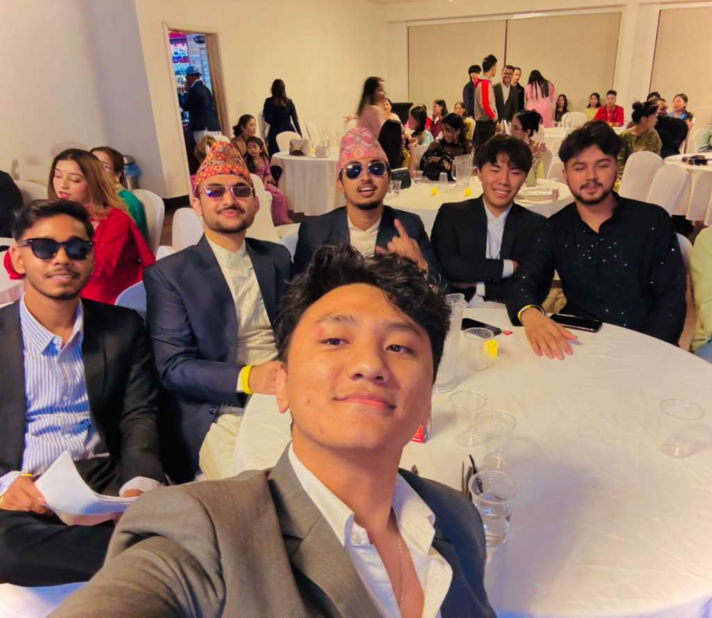

Being part of NepSa has been a very meaningful experience for me.
As an international student, adjusting to a new country, culture, and environment can sometimes feel overwhelming.
Having a club like NepSa creates a sense of comfort and belonging.
It brings together students who share similar backgrounds, traditions, and experiences,
which makes it easier to connect and feel at home.

Connecting with Culture
Being part of NepSa has been a very meaningful experience for me.
As an international student, adjusting to a new country, culture, and environment can sometimes feel overwhelming.
Having a club like NepSa creates a sense of comfort and belonging. It brings together students who share similar backgrounds,
traditions, and experiences, which makes it easier to connect and feel at home.
Through NepSa, we celebrate our culture, support each other academically and personally,
and build strong friendships. It helps international students feel less alone and more confident while studying abroad.
Being part of this club has truly made my college journey more enjoyable and supportive.